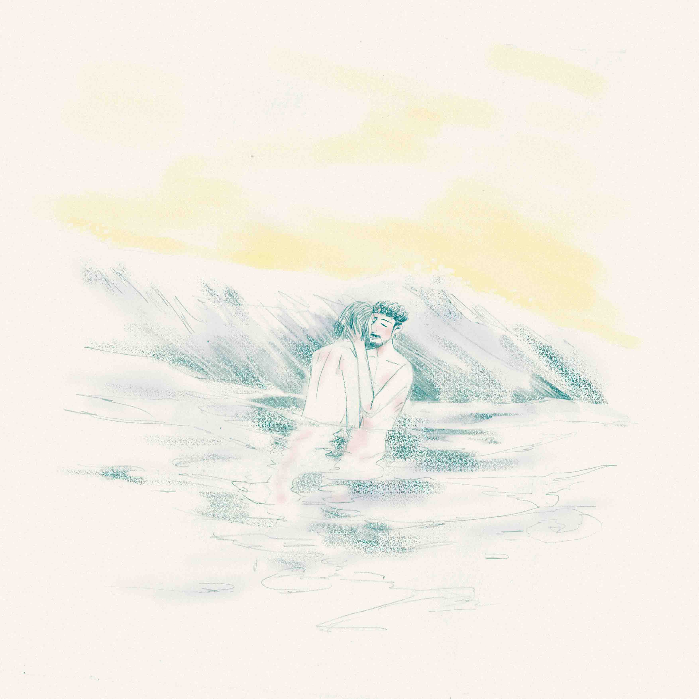
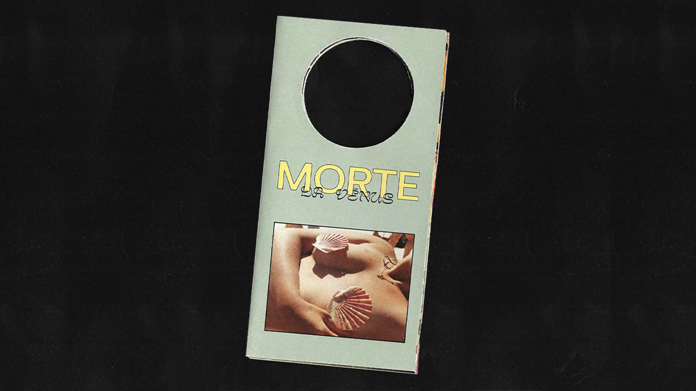

Blue Bob was a first attempt at fashion illustration, and ended up marking a shift for me as far as my illustrative style goes.
Boy + the River Blue was inspired by Emmett Till’s story.
There are a lot of amazing womxn in my life who have consistently had my back, and I do my best to have theirs. The Power of Girls is about womxn and girls leaning on other womxn for support, and the power that can come with that sense of community.

Weep is a direct response to the senseless murders of black people at the hands of police across the country. When I was creating it, I wanted to use the piece to encourage marginalized groups to consider their own mental health and well being, as well as seek out resources to help cope with the onslaught of trauma that so many are/were enduring.
Amanda “Leigh” Ponce is a multi-disciplinary artist from the Washington, D.C. area with a love of cinema and performance, specializing in media for film/tv/theatre and social justice/activism through art. As a visual artist and graphic designer, she’s had the pleasure of working with numerous theatre companies and filmmakers across the country. She is the graphic designer at Broadway for Racial Justice, was recently commissioned by Culture Strike/The Center for Cultural Power to create a piece encouraging early voting, and is a Creative Partner at HOT TOPIC, where she has multiple tee-shirt lines currently in production.
I went to my first Pride Parade in 2015, and since then, I always felt different about June. I was nervous about going. I was afraid that people would notice me and that I would feel lost in so many colours. However, what I did not expect was that I would feel great. Going to Porto’s Pride Parade gave me a feeling that I belong and that it is safe for me to exist. I now go to the parades because I want people to feel the same as I did. I want young and old queers to see me and feel secure and safe because I am there with them, marching by their side.
In 2020’s Pride Month, everyone’s parade got cancelled because of the pandemic. However, June remained the month of freedom, happiness and colours. Although we couldn’t celebrate in the streets, I felt like we should still be together somehow. The LGBTQIA+ narratives have always been difficult to pass on. In the last couple of decades, the mainstream culture as conquered some diversity in what type of stories they portrait, but we still lack narratives that are not white, cis or heterosexual. In Portugal, considering we went through a strict dictatorship not that long ago, it is often difficult for our LGBTQIA+ community to connect with Portuguese culture, since we lack diverse representation in the stories we choose to pass on and perpetuate.
With that in mind and the need to celebrate 2020’s pride, I made an open call to collect stories of pride, parades, coming outs, first kisses and others from Portuguese and international queers. I wanted to celebrate one story per day by sharing it with an illustration on Instagram. The response was incredible. I got more stories than I needed, and was able to develop a project that is dear to people, celebrates diversity and reclaims pride through social media.
STORIES
Lince
When I was in preparatory school I met a boy who was very calm, a little shy and had the most beautiful dark haired curls. His name was Luís. He was almost my opposite and, maybe because of that, he caught my attention. I used to hang out more with girls, the boys always looked too agitated and made me feel uncomfortable but with Luís things were different. He used to sit next to me in class and with time we became friends.
I felt that I liked Luís in a “strange” way. I liked him more than I liked other people and I couldn’t understand why. When I asked my dad why I felt this way he told me that it was because we were really good friends. We were in fact really good friends but for some reason that answer wasn’t enough for me.
Once that I got him some yellow wildflowers that grow in the winter and offered him a bouquet. He was confused and asked me why I would want to offer him flowers if he wasn’t a girl. I said something like “I want to give you flowers because I like you”. We continued to be good friends until the end of preparatory school and after that we went through separate ways. He was my first love.
Stuart
Last summer I went to the first pride parade I've ever been to in Porto. I've always felt nervous to go in my own country as it can be very overwhelming and crowded in London and I’m quite anxious in huge crowds. Being in Porto at the right time with the right people gave me the motive to go finally.
I wasn’t sure what to expect being in another country but I've always enjoyed Porto when I visit. My friend and partner were very reassuring about it and I knew it would be a new experience. We joined the parade from the beginning and it was amazing, I felt safe and welcome. The general vibe was really happy and I appreciated being a part of the parade, especially being able to hold my boyfriend’s hand through the whole walk and experience our first pride together in his country. Experiencing pride in Porto gave me confidence and a new appreciation for being part of the LGBTQ+ community, definitely one of the happiest memories of 2019!
Inês
I have my dad’s eyes, which were my grandmother’s eyes and which have been passed on for generations.
They are those blue eyes that can be green and grey when the weather is cloudy. If you look me deep in the eyes you can see that all those colors are always there. The iris has traces of blue, green and grey. Near the pupil you can even see a soft brown that smooths the transition.
- Our eyes - I said once to my dad - they are heterochromatic. That’s what you call when eyes have multiple colors.
- Sure - Said he, cut and dry. He always says this when the topic doesn’t interest him.
- And that heterochromatic - continued I - is the only hetero thing about me.
Dinis
In that summer, August was especially dry and hot. After a morning on the beach I was resting in my bed. The heat made me tired and weirdly horny. I was scrolling my grindr to get some sleep until a beautiful boy texted me. After some plain conversation and the usual trade of pictures we agreed on meeting in a nudist beach at the end of the day. Even though I was excited about it, I thought about ghosting him. Finally I managed to sleep a little. I left my family on a beach nearby, saying to them that I needed to use the nearest bathroom. I hesitated. I hesitated again. I obeyed. My desire couldn’t wait any longer and my body couldn’t rest. My lover was far, isolated from everyone. I saw his blue umbrella and ran to him as if he was the only source of water capable of killing my thirst. We met and finally I got undressed. I sitted next to him in his towel and we hugged. We kissed, we cuddled, we explored our bodies. His body was warm and salty. I felt amazing, I was burning with desire! I felt my erection rubbing on him and we quickly became one. We established a physical connection in the most intimate way. Unfortunately I was interrupted by a call. My family wanted to know where I was. I told them in a rush that I went for a walk, hung up the phone and reconnected with my lover. An explosion of desire, heat, tenderness, and lust took us over. After that release of love and sex we bathed together in the ocean. The coldness of the water and light breeze of wind were marking the end of our meeting. We hugged one last time and kissed by last rays of sun we said goodbye.
Ruben
When I was younger I used to despite men who wore makeup. I used to see it as a joke, something only clowns would do, and I couldn’t see it as an expression of identity. Even though my younger self liked to paint his face, I would get grossed out when some other men did it, certainly a consequence of internalized homophobia and toxic masculinity. When I was nineteen I met a drag queen and got more interested in makeup.
It took a while to educate myself about drag, to know it’s herstory and to appreciate everyone’s effort in that art. I now explore myself in drag as a political and identity statement. I don’t want to see another boy grossed out by seeing a man wearing makeup.

Chico
In the summer of 2019 I went camping with my ex boyfriend in the south of England, near Devon. On our second day we decided to go to an isolated beach, near the camping site, and we took a drug. We were naked the whole day, catching the sun in complete ecstasy. I remember being in the water with him, tangled in him and feeling like we were queer nymphs. At that moment, alone, we were the only love story in the world. Under the sun, bathing in the atlantic just as I was born into this world: naked and queer. I felt so powerful and loved.

Pê
I met him on a tuesday in a coffee shop. I was smoking and looking at him at a distance and in silence. I wanted him to like me. By 2pm he showed me his city in which I was just passing by. We bought two glasses of wine, rose for the summer, and went to his house. I smoked his weed, drank his wine and slept in his bed. Three nights.
When I came home I wasn’t the same. I missed him so much that I convinced him to stay with me and my friends the next weekend. I’ve never presented a boy to my friends. He was nervous but she managed to relax. He smoked my weed, he drank my wine and slept in my bed. Three nights.
Three nights more and I would return to his house. It didn’t take long for him to call me his boyfriend. I can never forget the morning of the 13th February: the hangover, the cats sleeping in the bed - I loved him so much. I was 25years old and he was my first boyfriend. I want to thank him, he showed me it was possible, I coulndt image that I could be that happy. I didn't believe in drugs like love.
This world has a certain way of chewing every hope out of us. Especially those who live outside the standards. I loved and lived with so many of us. I always knew we deserved more. I pray that everyone can love someone as I love him. He, who takes me to the bathroom and dresses me with hope again.
Bastos
During a long time in my life I avoided exploring my sexuality. Each time I think about it I laugh because I think I have ever been as happy as I am now. My girlfriend made my world turn 180º. We became friends the second we met, her energy is completely different from everything I’ve known before. I will never forget our first kiss. When we kissed it felt like we weren’t in a crowded new year’s party. Only we existed, the two of us, united in the metaphysic space. It was so natural. As if she already knew everything about me and me about her.
Patrícia
When I was in my 2nd or 3rd year of preparatory school I used to have a collection of floating fish toys. In a very hot summer day two friends of mine came to play in my house. I was very close to one of them, I was in love with her and wished to be a boy so that she could date me.
We were playing with the fishes and some buckets of water, pretending to have an aquarium of our own, and we got soaked. After taking a bath we went to my room and shared some kisses, first in the mouth, then the belly and finally in the cookie. That’s when my mother entered the room and we covered ourselves with the bed sheets from head to toe to hide from her while she was on the balcony.
V
I always felt that my expression and gender identity didn’t match with the “female” expectations that my body and society imposed. I’ve always been the x tomboy, x who would play football with the boys, x who faked not to have breasts, x who would walk topless through the house, wishing to walk the same way on the beach.
The first time that I felt my identity validated was when my girlfriend asked me about which pronouns I prefer. Since she’s american*, she questioned me if I wanted her to refer to me as they/them (frequently used by non-binary people). I didn’t know what to think about it but the truth is that I felt more liberty and safety to express myself and how I wanted to be perceived. I thought about it for a while and came to the conclusion that those are my pronouns: they/them. For so long I’ve been in denial about the feminine and masculie performance, I’ve realized that I belong to a spectrum. This is who I am, I’m someone who doesn’t feel like a woman or a man, I just feel like myself
* V is portuguese and the portuguese language is extremely binary. There are no neutral pronouns in portuguese, when you talk about a person, animal or object you always specify a gender (female or male) to it in the terms you use.
Lince (João) Rebelo is an illustrator, designer and artist from Porto, Portugal. Graduated in Communication Design in 2019 at the Faculty of Fine Arts of Porto, his work aims to explore contemporary queer narratives based in his personal experience, as well as other people's.
Medium: Markers on paper
Size: 21x29,7 cm
This piece represents the path to the discovery of one’s self — sexually, mentally and emotionally. It starts at a place of suffering and restraint rooted on ourselves and ends with a wild garden of thoughts and emotions, free to experience the world without shame or guilt. As LGBTQ+ individuals, we grow up in a world that teaches us that there is only one acceptable way of experiencing our bodies and the world, and that strikes us down for defying these ideas. Consequently, we often blame ourselves for not “being normal” and cycles of restraint, guilt and self abuse become present in our every day life. Learning that there are no rules to love, sexuality and gender expression then becomes the key to self growth and complete freedom. Accepting our own love and other’s love transforms the spaces we experience life in, and unite individuals that together create change, turning thorns into buds, concrete into meadows.
Laura Calado, also known as Girl Gag, is a Portuguese illustrator and graphic designer whose work explores the subjects of gender, sexuality, beauty, pain and transformation, all from a feminist perspective. Her pieces use the excess (of color, symbolisms and figures) with the aim of testing the limits of both herself and the world, of our comfort zones, and of art.
We’re told it doesn’t exist, it’s a mere illusion, or that it exists but you’re exempt from it.
You say it doesn’t exist, but you murder a black man in the daylight with his blackness as the justification.
You say it doesn’t exist, but 6 of you come together to murder a 21 year old for his blackness.
You say it doesn’t exist, but a WHITE police officer physically abused a black woman in front of her 8 year old daughter.
You say it doesn’t exist, but we keep being alienated, our lives keep on being non-existent, our bodies keep on being explored, ravished and murdered...
all in 2020.
Denial becomes the perfect method to avoid facing the monstrous reality of your own actions.
Denial enables the “good coloniser” narrative to persist in Portugal, the romanticisation of the “heróis
do mar” (heroes of the sea), the ones that “discovered”, the ones that maintained good relations with the natives of the countries they stole everything from, the people whose heads they severed, the people they convinced were worth for nothing except to be explored and produce more enslaved bodies.
Denial is the sweet comfort of the white body.
“What’s racism, how does it feel to be a racialized person?”
Today our Black bodies refuse to answer these questions, while the white body continues to deny what it has produced.
If we talk about “race”, its origin and creators, we quickly come to realise that it is a white invention. So from now on, we’ll start asking white people: “what is racism, how does it feel to be someone who racializes?”
— May you answer me without projecting fragility?
Wickedness shows itself in a different light depending on the person, some choose to say:
1.
“We’re all human”
“I don’t see colour”
Despite them knowing racialization is deeply rooted in our society causing black deaths daily, some pretend
to be blind to it, making our existence invisible.
2.
Others choose to undermine our pain:
“it’s not really like that”
“I’ve read... I’ve seen... I’ve studied... and... it’s not really like that”
Casually trying to impose on us the idea that our pain isn’t valid, and once again; dehumanise us from an experience that you have no familiarity with..
3.
I’d say the most honest ones say:
“I don’t like black people, black people are... dirty... ignorant... strange... slaves”
“When my grandparent was in... Africa... he got along very well with the blacks”
“I’m sorry darling, nothing against black people, but as my daughter I don’t want you to give me black grandkids”
They keep on living with their colonial habits, they’re our neighbours, our colleagues, our friends’ parents and sometimes they’re our “friends”.
Racialization becomes the most evil concept created in history. The idea of white versus black, in which white represents the standard, the good, the pure and black represents all that is denied and repressed by the white.
Racialization is a personal conflict that “white” people experience, it’s as cruel as diseased.
— It’s a serious disease, keep reading and re educating your white 'self' to see if you can ever build an authentic identity out of that condition.
TRANSLATION OF THE CAPTION OF THE DRAWINGS
1. The text reads "white christian terrorism"
2. The text reads "white disease". The car has incorporated elements of the Portuguese flag
3. The text reads "museum of white people who try to be civilised"
4. The text reads "honest white people for sale"
REFERENCES
DiAngelo, R., n.d. White Fragility. pp.39-40,71-98 115-122.
Kilomba, G., n.d. Memórias Da Plantação. Lisboa: Orfeu Negro, pp.35-44.
Magazine, V. and Magazine, V., 2020. Beyond Guilt And Privilege: Abolishing The White Race - Viewpoint Magazine. Available here.
DRAWINGS
Rappepa Velho Tempo
‘Fonte’ which in Portuguese means; source/fountain/foundation.
nossa Fonte is a platform ran by 8 Pro-Black Gen-Z people who all agreed to challenge the invisibility of minority groups and [specially] Black women aiming to eradicate colonialist narratives through their net.
nossa.fonte celebrates Black creativity and intellectual dialogues with intention to dismantle social hierarchies.
‘It is an open space where art and politics coexist and come together.’
Within their categories they publish Key revolutionary references of the arts, Literature, Film and politics every week.
nossa Fonte directs itself to the people of African diaspora residing in Portugal, as they feel a huge sense of absence of Black references & conversations within the Portugual landscape: where racism is very usual as well as publicly normalised; things like Black face and cultural appropriation are very much present...Very recently there’s been a KKK-like protest by right wing extremists threatening political leaders, anti-racism and anti-fascist activists to ”go back to their countries” or their families would suffer.
As a creative I try to explore different mediums such as 3D, motion design, video, photography and graphic design, combining my degree in sound and image and my master’s degree in graphic design. I look forward to creating hybrid projects that enhance the visual experience as such, aiming to explore the experimental side of the analog and digital mediums.
The Rife Magazine open call lead me to a new challenge where I had to question my role in society as a woman and as part of the LGBTQ+ community. Trying to figure out why women normalize harassment questioning structural sexism in society I came up with this project that aims to visually explore women in the “modern” world.

Morte da Vénus is an experimental zine that shows my personal experience as a Portuguese bisexual woman living in a time where the far-right side of Portugal takes a toll on our daily life inciting sexism and homophobia. The project is based on Botticelli painting - The Birth of Venus – and comes up as result of a deconstruction, questioning the role of women in society and readapting the renascence painting to the current values using the Botticelli’s work elements such as flowers, fabric, shells, water and Venus, the woman herself. The zine adapts to a “do not disturb” door handle and the written content corresponds to some sexist and homophobic comments I found online as well as a few ideas from the far-right parties in Portugal, disturbing ones.
Sexism is not ok, homophobia is not ok. We do not live in a bubble and we need to learn and respect one another and stop raising scared women.
Sofia Noronha is a motion and graphic designer that focuses on creating hybrid projects that combine analog and digital formats exploring 3D, photography, video, motion and graphic design.

This fanzine was made using passages from Jornal da Fé, by the Universal Church, inserted between images secluded from Revista do Século 20 (20th Edition) and from the internet. The contrast between the images and text open space for interpretation of each sentence, questioning facts that up to this date haunt Brazil, such as: racism and exceeded police force on the streets. The phrase "How Long?" which runs through this publication emphasizes the problematic and questions how long this will be our reality.
Giulia Fagundes graduated in Graphic Design from Universidade Presbiteriana Mackenzie. She has won he Latin American Design Festival 2020 as Young Talent, at Peru. She is also a managing partner of Daó studio based in São Paulo. In collaboration with her team, she has designed many visual identities and editorial projects for well-renowned companies in Brazil such as Sesc São Paulo, Casa da Imagem, among others. Daó has won some Latin American Design Award and Brasil Design Award editions, and the 13th Biennial Graphic Design Award organised by the Brazilian Association of Graphics Designers. Her main interest is to tackle political issues through her projects.
I relate my art to immersion in non-linear research in multiple techniques, such as photography, photo collage, digital illustration and embroidery, among other perspectives and approaches. To bring a visual poetic narrative of my time and space, I resignify my continuous rescue of memory and affection.
"Imagery of healing rituals, forgiveness, the tackling of issues and the symbolical potency of everyday objects in relation to the female body, from antiquity to the present days. Our mythical ancestrality whispers in our ears and we listen with our hearts, calling it intuition. Leading to our own agency, this is a journey into the future and its projections."

Ana Pina is a 27-year-old Amazonian artist, born in the municipality of Ananindeua (PA). I currently live and work as a designer, adding this to the artistic processes and experiences in SP.
From all the stories I could tell, this one is particularly important to me and my family. It is about a special person who took care of my grandma (as she was the eldest sister), as well as me and probably everyone else who lived and passed through that backyard. The person I am referring to is Josefa Mendes de Souza, known by everyone in the region as "Aunt Fitinha". Born on September 5 of 1938 (currently 83 years-old), she oozes sympathy and joy to all who come to her home.
Aunt Fitinha was born in Pé da Serra - Bahia, in the county of Aporá (4 hours from Salvador). In addition to taking care of several people in our family, she married in 1961 and had 20 children. One of her first pregnancies was triplets, and today they're all nuns—at the time, it was considered a miracle. Today, 17 of the children are alive. We are undoubtedly the largest family in the region... I remember living there, my classroom had 16 students, 13 of which were my cousins. Many of them are Aunt Fitinha's offspring.
She is one of the most special people in my life and I love her dearly. I hope one day to reach that age with the same energy and contagious joy. If you ever pass by Pé de Serra, go visit her. But stay for lunch-time, it's the best food in town.
Fernando Mendes is a photographer based in central São Paulo. His appreciation for photography began at 16, when he started skating. With the habit of self recording, his desire to pursue photography arose. After buying his first camera at 23, he has been photographing for three years now. Fernando likes registering moments with his friends, who are his main inspiration, and photographing people he loves, transforming that moment of communion into something special and eternal.
Power of Girls Print
Days of Pride
The “Wildflowers”
Tell Us About
Your Whitness Instead...
The Death of Venus
How Long?
Congá
The Great Fitinha